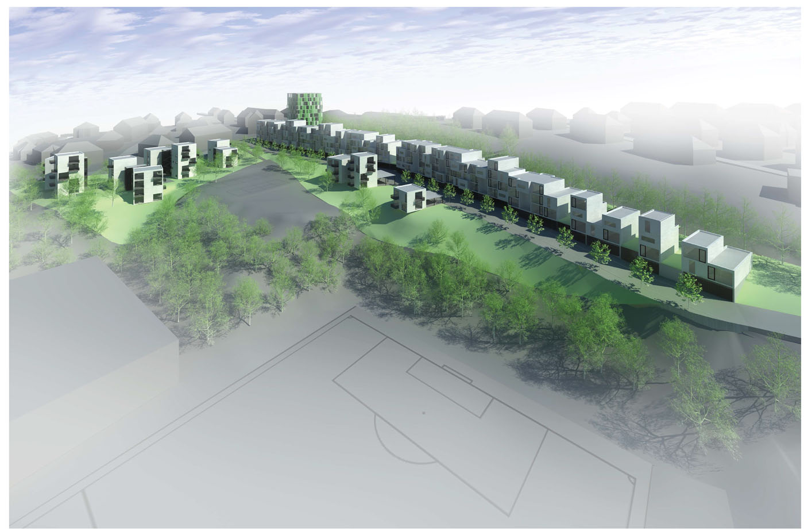
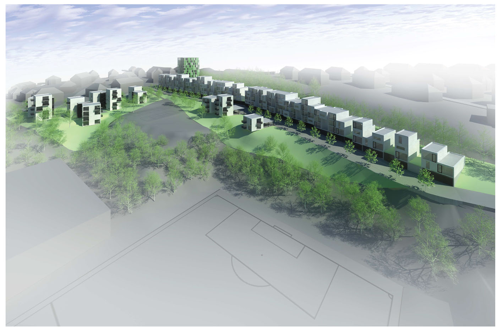
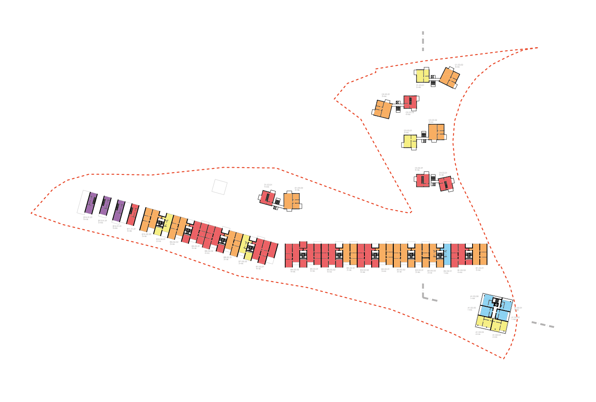
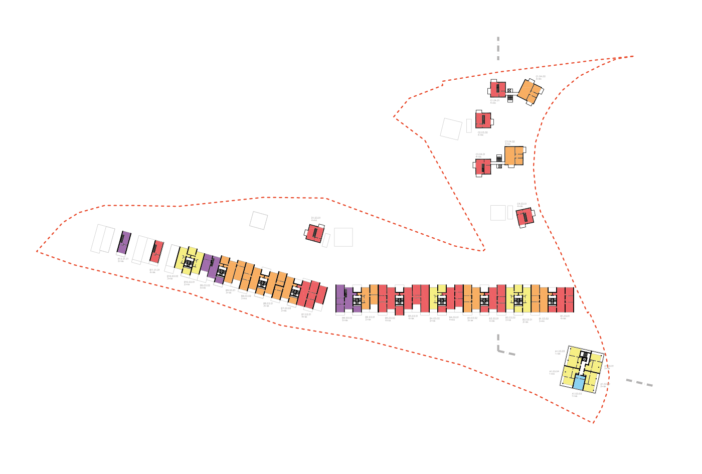
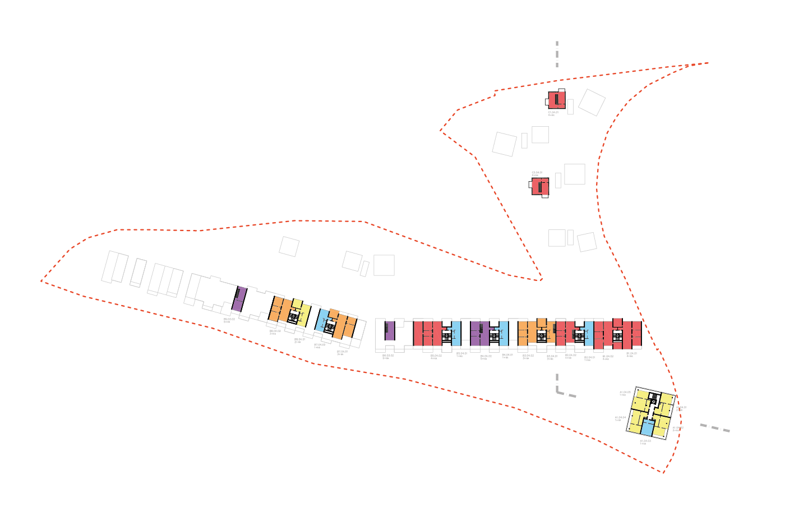
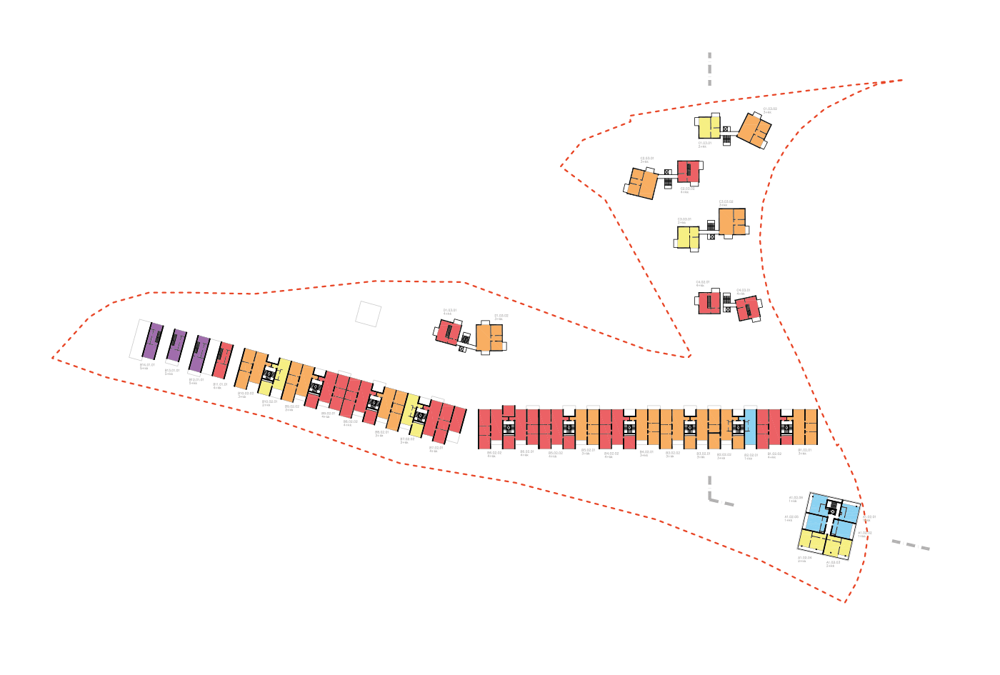
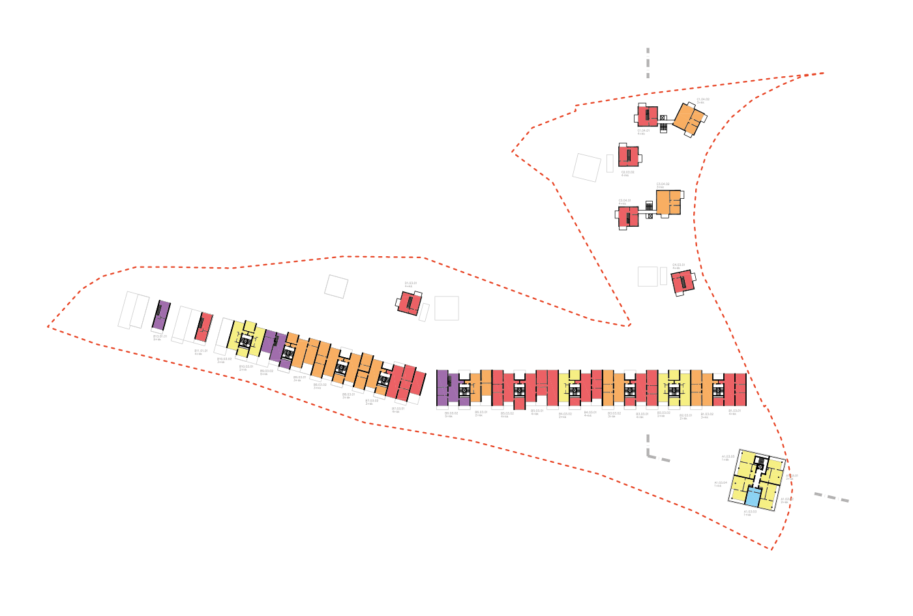
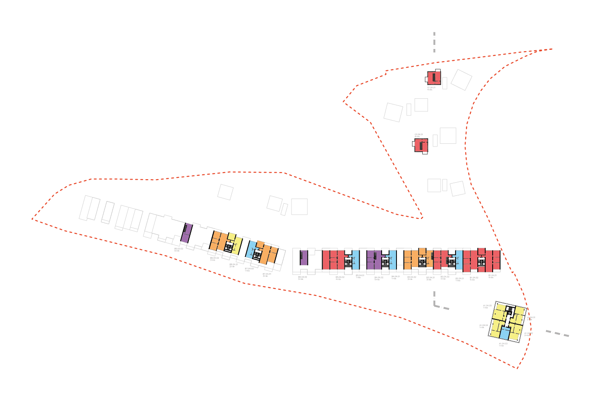

-


 

-

 



Obytný soubor Stárka – Košíře
Lokalita Na Stárce je z hlediska pražského kontextu velmi specifická. Položená vysoko na úbočí pražské Vidoule uprostřed různorodých městských struktur a přírodních ploch. Místo vzdálené vzdušnou čarou méně než 2 kilometry od rušného Anděla, ale zároveň téměř „na konci města“. Tato vrozená kontradikce bude vždy představovat enormní, ale křehký potenciál. Jeho využití vyžaduje vyváženou kombinaci kvalit městského a přírodního prostředí.
pozemek
Parcela samotná je klínem, vnořeným do zeleného ostrova uprostřed Košíř. Obklopená zalesněnými svahy, svou užší stranou se dotýká stávající zástavby. Charakter prostředí definuje především složitá morfologie, dva terénní zlomy, jeden těsně pod pozemkem, druhý procházející středem po celé jeho délce (z větší části vytvořený dřívějšími terénními úpravami). V podélném směru se pozemek mírně svažuje od východu k západu.
Zastavět takové prostředí uniformní zástavbou by vzhledem k urbanistickému kontextu a topografii pozemku znamenalo promrhání značné části potenciálu místa.
„cesta z města“
V jihovýchodním cípu se pozemek setkává s městem a směřuje k západu do přírody. Prostor se otevýrá širokému výhledu na sever do košířského údolí.Představujeme tři základní charaktery, vycházející z celkové logiky prostředí a složité morfologie parcely. Každý z nich využívá předností místa, ve kterém se nachází, dohromady tvoří pestrou škálu typologií bydlení.
Východní cíp pozemku je zároveň jeho nejvyšším bodem. Jediné místo, odkud lze přehlédnout hřeben Vidoule směrem k jihovýchodu. Zároveň místo kontaktu se stávajícím městským prostředím. Do místa, jehož potenciál zvýšila nová výstavba v prostoru Na Pomezí , lze důvodně uvažovat o přemístění železniční zastávky z dlouhodobě neudržitelné současné polohy. Urbanistickou figuru veřejného prostranství doplňujeme dominantou – věží, která může napomoci vzniku funkčního veřejného prostranství. Zahuštění přináší přidanou hodnotu jak pro nové bydlení (daleké výhledy), tak pro stávající strukturu jako potenciál rozvoje lokálních služeb a zlepšení dopravní dostupnosti.
Terénní hrana určuje charakter jižní části pozemku. Jedno z mála míst, které v severním svahu umožňuje zachytit jižní slunce. Zároveň s nadhledem nad okolním prostorem a výhledem k severu. Hranu zastavujeme lineární hmotou s ulicí – promenádou.
Terasa v severní části pozemku vytváří svět sám pro sebe, doslova louka u lesa. Místo vyplňujeme drobnou strukturou viladomů, vytvářející skrytá zákoutí a chráněné intimní prostory
.Převýšený kubus věže uzavírá prostor náměstí a přináší urbánní kvalitu do stávající struktury. Hmota věže je navržena tak, aby co nejméně zastínila stávající zástavbu, ale zároveň vytvořila lokální dominantu.
V parteru objektu je vzhledem k poloze možné umístit lokální vybavenost orientovanou do veřejného prostoru. Ve věži jsou umístěny převážně menší byty. Ke každému bytu náleží stíněná terasa. V horních patrech se nachází exkluzivní bydlení s výhledem na celou pražskou kotlinu.
bytový dům na hraně
Hrana v horní části pozemku definuje linii. Hmota o výšce čtyř, maximálně pěti podlaží tvoří díky bohatému členění příjemně měřítko. Objem zástavby klesá směrem k západu, kde vzniká intimnější prostředí.
Zástavba profituje z terénní situace, zlomu, zvýrazněného navíc existujícím fotbalovým hřištěm. Díky rozdílu úrovní je umožněn vjezd do podzemního podlaží přímo z ulice. Navržené výškové úrovně domu a ulice redukují nutné výkopové práce. Zemina, kterou je nutné vytěžit, lze umístit přímo v návaznosti na stavební jámu a eliminovat tak složitý transport mimo pozemek.
Zvolený modul 4,3m vytváří ideální proporci pro interiéry bytů, orientované sever-jih. Kvalita všech bytových jednotek je definována základní charakteristikou hlavního obytného prostoru - průhledu napříč celou dispozicí. Přináší do interiéru jak jižní slunce, tak výhled na Prahu směrem k severu. Takové řešení umožňuje příčné provětrání všech bytů, tedy možnost udržení tepelné pohody interiéru v letních měsících bez nutnosti používání klimatizace. Díky striktní modulaci a pravidelnému rastru instalačních jader je zajištěna variabilita různých velikostí bytů.
Ulice je doplněna stromořadím a vytváří tak příjemný sdílený prostor. Při jižní fasádě vznikají v úrovni 1.NP soukromé zahrady navazující na byty. Bydlení je od železniční trati chráněno zahuštěným lesním porostem. V exponovanější západní části pozemku lze uvažovat o instalaci jednoduché protihlukové stěny.
Struktura subtilních objemů vytváří drobné, lokální měřítko. Systém volně stojících komunikačních jader mezi objemy s byty vytváří atmosféru individuálního bydlení, zároveň ale zachovává efektivitu bytového domu. Způsob vstupu do jednotlivých bytů zvyšuje pocit soukromí a individuální charakter bydlení. Byty tak zabírají vždy celé podlaží a otevírají se do všech světových stran. K bytům ve vyšších podlažích náleží prostorné balkony. Větší byty jsou řešeny atraktivním mezonetovým uspořádáním.
Společné podzemní garáže jsou umístěny tak, aby modul parkoviště co nejméně kolidoval s optimální proporcí domů.
Většina plochy parteru je připojena k přízemním bytům jako soukromé zahrady. Ve středu struktury při vjezdu z ulice Na Stárce se nachází sdílené prostranství s dětským hřištěm.
Pozemek je dopravně napojen na stávající skelet komunikací dvěma vjezdy z ulice Na Stárce. Průjezd do ulice Na Výši je ponechán pouze pro zásobování (popeláři, hasiči, stěhování, záchranka atd.), tak aby byla eliminována průjezdná doprava. Hustota zástavby na pozemku je strukturována i s ohledem na dopravní obslužnost a eliminování dlouhých příjezdových komunikací.
Všechna stání, náležející k bytovým jednotkám jsou umístěny v krytých garážích. Ty jsou doplněny příslušným počtem návštěvnických stání na terénu. Koncepce garáží je postavena na co nejtěsnější vazbě mezi parkovacím stáním, úložným prostorem (sklípkem), bytem a vstupem do domu tak, aby se každý obyvatel mohl snadno identifikovat s konkrétním místem, domem. Klíčový objem garáží je v kontaktu s přímým denním osvětlením, což zvyšuje komfort používání těchto prostor.
Každému vertikálnímu komunikačnímu jádru přináleží vlastní prostory pro technické vybavení domu. Prostory pro správu areálu jsou umístěny u vjezdu v 1.PP bytového domu. Přístup ke všem bytovým jednotkám je bezbariérový.
Na železobetonové konstrukce podzemních prostor navazuje v objektu bytového domu příčný žb systém bytů s částečnými vyzdívkami v modulu tablet4,3 m. Nadzemní podlaží viladomů jsou zděná s žb stropy.
Objekt věže je navržen jako železobetonový skelet s modulem 6 x 5,3 m s vyzdívaným obvodovým pláštěm.
Zděné fasády budou kontaktně zatepleny. Okna budou černá hliníková nebo černě lazurovaná dřevěná a na osluněných místech budou opatřeny předokenními žaluziemi respektive posuvnými stínícími elementy (věž). Parter ulice s vjezdy do garáží i vertikální komunikace viladomů budou z polo-transparentních kovových prvků. Střechy všech objektů jsou navrženy ploché.
| Klient | V - invest |
| Lokace | Praha 5 – Košíře, Česká republika |
| Typologie | bytový dům |
| Typ | novostavba |
| Rok | 2011 |
| Status | soutěž – vyzvaná |
| Užitná plocha | 11800 m² |
| Velikost | |
| Náklady | 400 000 000 Kč |
| Autoři | ing. arch. Filip Tittl, ing.arch. akad.arch. Jaroslav Kosek, MgA. Jan Říčný, MgA. Filip Kosek |
| Spoluautoři | |
| Spolupráce |